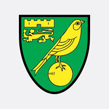
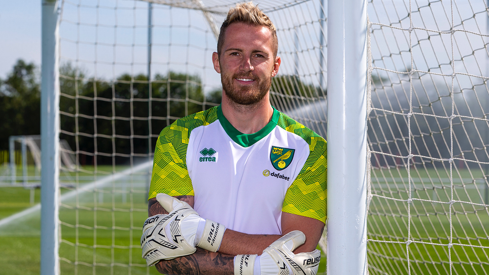
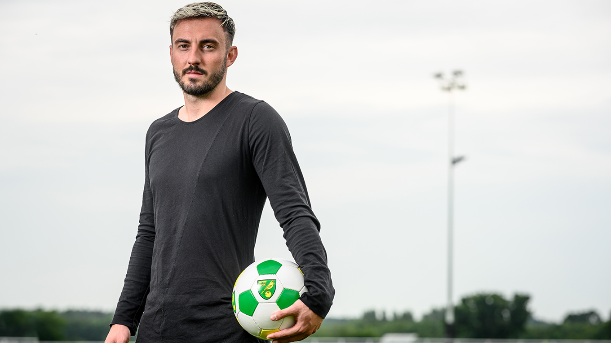

Welcome to my sports website - Here you can find the latest up to date sports information about Norwich City FC.
Recently, Norwich have been promoted to the Premier Leauge, arguably the best in the world, with some of the best players, such as -
Click here to find out more about the premier leauge
| Year | Wins | Draws | Losses |
|---|---|---|---|
| 2018-19 | 27 | 13 | 6 |
| 2017-18 | 15 | 15 | 16 |
For the Canaries, this season has been exceptional, arguably one of the best, especially compared to previous results, which are showned down below - Which all comes down to how hard they've work under the influence of the greatly respected man, Daniel Farke, Norwich's suceess generator
Ralph Fahrman - The german showstopper from the bundesliga who's played 196 times for shalke and also the champions leauge, along side the best players in the world. Fahrman was signed by Daniel Farke as the goalkeeper, because of his great experience with the top leauges, and knows that he can handle whatever will come his way in the premier leauge

Jospi Drimic - Another bundesliga player joining Norwich in the next few seasons to come. The 26, has spent the last four seasons with German side Borussia Monchengladbach. Drmic has also played in the Champions League with Bayer Leverkusen. Which again, like fahrman, gains them indivdual experince which when put together, can make norwich a very strong team. Likewise to this, Drmic also has 32 caps for switerzland with 10 goals - Also representing them twice at the world cup.
